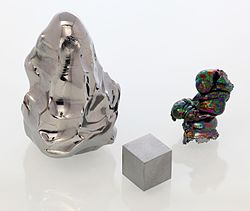

Название, символ, номер Га́фний / Hafnium (Hf), 72
Атомная масса
(молярная масса) 178,49(2) а. е. м. (г/моль)
Электронная конфигурация [Xe]4f14 5d2 6s2
Радиус атома 167 пм
Химические свойства
Ковалентный радиус 144 пм
Радиус иона (+4e) 78 пм
Электроотрицательность 1,3 (шкала Полинга)
Электродный потенциал 0
Степени окисления 0, 2, 3, 4
Энергия ионизации
(первый электрон) 575,2 (5,96) кДж/моль (эВ)
Термодинамические свойства простого вещества
Плотность (при н. у.) 13,31 г/см³
Температура плавления 2506 K (2233 °C, 4051 °F)
Температура кипения 4876 K (4603 °C, 8317 °F)
Уд. теплота плавления 25,1 кДж/моль
Уд. теплота испарения 575 кДж/моль
Молярная теплоёмкость 25,7 Дж/(K·моль)
Молярный объём 13,6 см³/моль
Кристаллическая решётка простого вещества
Структура решётки гексагональная
Параметры решётки a=3,196 нм; c=5,051 нм
Отношение c/a 1,580
Прочие характеристики
Теплопроводность (300 K) 23,0 Вт/(м·К)
Номер CAS 7440-58-6